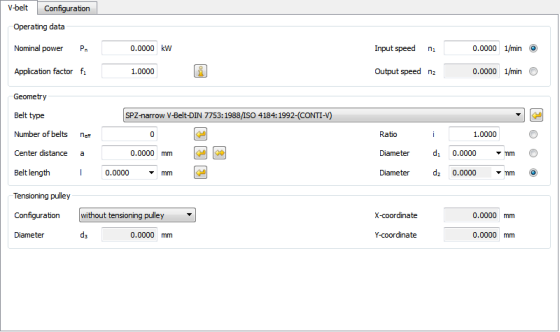

|
|
|


V 带
前言：
遵循制造商的说明来确定 V 带传动的尺寸并进行验证。大多数目录都详细说明了整个计算方法。随着材料和侧面形状的改进，V 带能够传递的功率也在提高，因此制造商的数据是唯一真正可靠的数值。
V 带的完全自动计算，包括标准 V 带长度和标准有效直径。该模块综合考虑转速、有效直径、传动比和带长，确定每根 V 带可传递的功率。所有带数据均取自制造商目录中的表格（例如 ContiTech）。带的初始张紧力根据目录中提供的信息和带摩擦方程计算。计算输出无载荷/有载荷状态下的绳端力值，以及静止和运行时的轴载荷值。计算还输出临界转速和张紧距离值。带弯曲试验的计算值是带检查的重要结果。
作为一种变体，计算还可以使用第三个带轮（张紧轮）进行。您可以在 V带 选项卡中定义张紧轮的 X 和 Y 坐标。如果打开 配置 选项卡，则可以使用鼠标移动张紧轮。在这种情况下，相应的 x 和 y 值会显示在状态行中。此带轮可以根据需要定位在外侧或内侧。

图 51.1：基本数据：V 带计算
V-belts
Preamble:
Follow the manufacturer’s instructions when sizing and verifying V-belt drives. Most catalogs detail the entire calculation method. As the amount of power V-belts can transmit improves because of better materials and flank shapes, manufacturers' data provides the only really reliable values.
Fully automated calculation of V-belts including standard V-belt lengths and standard effective diameters. The module determines the transmittable power per belt while taking into account the speed, effective diameter, transmission ratio and belt length. All the belt data is taken from the tables in manufacturers' catalogs (for example, ContiTech). The belt initial tension is calculated according to the information provided in the catalogs and the belt friction equation. The calculation outputs values for end of rope force in no load/load and the axle load at standstill and in operation. The calculation also outputs the critical speed and tension distance values. The values calculated for the belt-bending test are essential results for belt inspections.
As a variant, the calculation can also be performed with a third pulley (tensioning pulley). You define the X and Y coordinates of the tensioning pulley in the V-belt tab. If you open the Configuration tab, you can use the mouse to move the tensioning pulley. In this case, the particular x and y value is displayed in the status row. This pulley can be positioned outside or inside as required.
Figure 51.1: Basic data: V-belt calculation